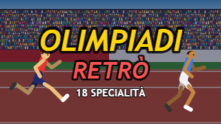

OLIMPIADI RETRÒ
18 specialità, decathlon a scelta e una carriera in tre campionati. Per Android, telefono, tablet e televisore.

SCARICA L'APKGuarda il trailer
·
Come si installa
- Scarica il file e aprilo: Android chiederà il permesso di installare app da questa origine.
- Se avevi una versione precedente alla 1.0.6.4, disinstallala prima: la firma è cambiata.
- Sul televisore, dopo l'installazione, il gioco compare fra le app del menu.
- Gli aggiornamenti successivi te li propone il gioco stesso, e se li scarica da solo.
Come si gioca
Due tasti, A e B, come nei giochi di atletica di una volta. Si gioca col touch, con una tastiera USB, oppure — se il gioco gira su un televisore — da un telefono o un tablet sulla stessa rete, che diventa il telecomando.